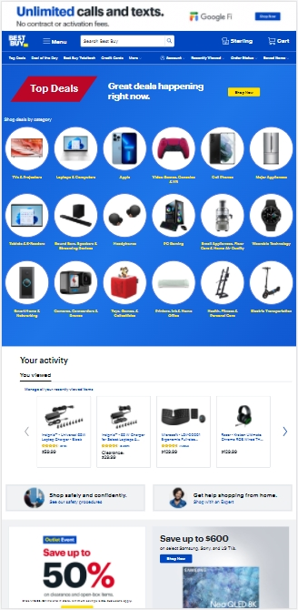
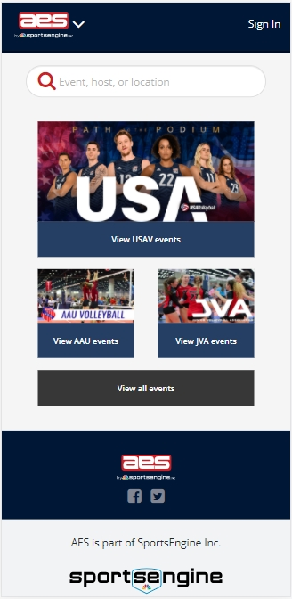

Design Priciples
Rick Larrabee - wdd230
Visual Hierarchy
BestBuy
The BestBuy website demonstrates a good visual hierarchy when you look at the website it is clear what is expected to be seen in order. Due to the hierarchy of this page, it helps them promote what is most important to the first.
Fitt's Law
H&R Block
The H&R website makes good use of Fitt’s Law in that the button that they want visitors to click is the largest and most prominent on the screen. The other buttons are smaller and further away, yet people who frequent the page will easily know where they are.
PARC - Alignment
aes Sports Engine
The aes Sports Engine uses the PARC - Alignment concept well. The website nicely places things in a way that nothing seems out of place. Everything is placed in a logical and clean manner that make it easy to navigate the site.